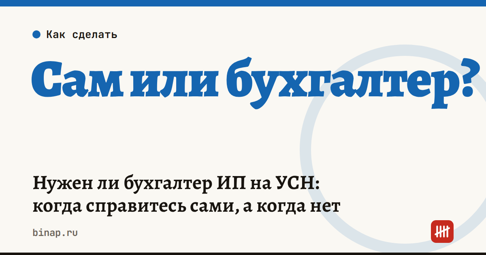

Нужен ли бухгалтер ИП на УСН: когда справитесь сами, а когда нет

ИП на УСН «доходы» без сотрудников обычно справляется без бухгалтера: бухучёт ИП вести не обязан, отчётность — одна декларация в год, а налог считается от выручки. Бухгалтер становится нужен, когда появляются сотрудники, НДС, учёт расходов или много операций.
Коротко
- ИП не обязан вести бухгалтерский учёт, если ведёт налоговый — на УСН это книга учёта доходов и расходов (ст. 6 закона № 402-ФЗ).
- ИП на УСН «доходы» без работников: декларация раз в год, уведомления по авансам три раза в год, взносы за себя.
- С первым сотрудником отчётов становится больше в разы: НДФЛ и взносы каждый месяц, расчёты каждый квартал.
- Доход больше 20 млн ₽ в год — на УСН появляется НДС и квартальные декларации по нему.
- Бухгалтер, онлайн-сервис или аутсорс — выбор зависит от числа операций, а не от выручки.
Что ИП на УСН делает сам, без бухгалтера
Если вы ИП на УСН «доходы» без сотрудников, ваш год выглядит так:
- Вести книгу учёта доходов и расходов (КУДиР) — записывать поступления по мере их получения.
- Подавать уведомления по ЕНП и платить авансы за I квартал, полугодие и 9 месяцев.
- Платить фиксированные взносы за себя и 1% с дохода сверх 300 000 ₽.
- Раз в год сдавать декларацию по УСН и доплачивать налог.
Все даты на 2027 год — в нашем налоговом календаре, а сколько выходит налога и взносов — в разборе сколько платит ИП на УСН 6%.
Когда без бухгалтера уже рискованно
| Ситуация | Что добавляется | Бухгалтер |
|---|---|---|
| УСН «доходы», без сотрудников, до 20 млн ₽ | КУДиР, уведомления, декларация раз в год | можно без него, хватит онлайн-сервиса |
| УСН «доходы минус расходы» | учёт и подтверждение каждого расхода | желательно |
| Есть сотрудники | зарплата, НДФЛ и взносы каждый месяц, расчёт по взносам, 6-НДФЛ, кадровые отчёты в СФР | нужен |
| Доход больше 20 млн ₽ | НДС, счета-фактуры, квартальные декларации по НДС | нужен |
| Маркетплейсы, сотни операций в месяц | сверка отчётов площадки с поступлениями | желательно |
| Импорт, валютные расчёты | валютный контроль, таможенные платежи | нужен |
| ООО на любой системе | обязательный бухучёт и бухгалтерская отчётность | нужен |
Три варианта — и кому какой подходит
Онлайн-бухгалтерия (сервис). Сервис сам считает налог и взносы, напоминает о сроках и формирует декларацию. Подходит ИП без сотрудников на УСН «доходы». Минус — за ошибки в исходных данных отвечаете вы.
Онлайн-сервис с поддержкой бухгалтера или аутсорс. Учёт ведёт специалист или компания, вы передаёте документы. Подходит, когда появились первые сотрудники, НДС или учёт расходов. Важно, чтобы в договоре была прописана ответственность за штрафы по вине исполнителя.
Бухгалтер в штате. Нужен, когда операций много каждый день, есть склад, импорт или несколько юрлиц. Это самый дорогой вариант: к зарплате добавляются взносы и рабочее место.
Сравнивайте варианты по одному вопросу: сколько у вас операций и отчётов в месяц. Выручка сама по себе ничего не говорит — у ИП с выручкой 15 млн ₽ и без сотрудников учёта меньше, чем у ИП с выручкой 5 млн ₽ и тремя работниками.
Как проверить, что справляетесь сами
- Вы знаете даты всех платежей и уведомлений на год вперёд.
- Доход записан в КУДиР, и сумма за год совпадает с поступлениями на счёт.
- Взносы уплачены вовремя и уменьшают налог.
- Нет сотрудников и операций в валюте, доход ниже 20 млн ₽.
Если хотя бы один пункт вызывает сомнение — посчитайте, во сколько обойдётся одна ошибка: пени за каждый день просрочки и штраф за опоздание с декларацией легко превышают стоимость нескольких месяцев онлайн-бухгалтерии.
Частые вопросы
Обязан ли ИП вести бухгалтерский учёт? Нет, если ведёт налоговый учёт — на УСН это книга учёта доходов и расходов. Бухучёт обязателен для ООО.
Нужен ли бухгалтер ИП на патенте? Обычно нет: декларации на патенте нет, но нужна книга учёта доходов и контроль лимита. С сотрудниками понадобятся отчёты по зарплате.
Что выбрать первому сотруднику — онлайн-сервис или бухгалтера? Если сотрудник один и зарплата фиксированная, справится онлайн-сервис с расчётом зарплаты. Если сотрудников несколько или есть больничные и отпуска — лучше бухгалтер или аутсорс.